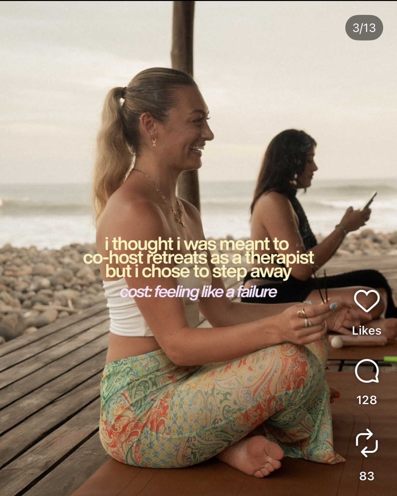
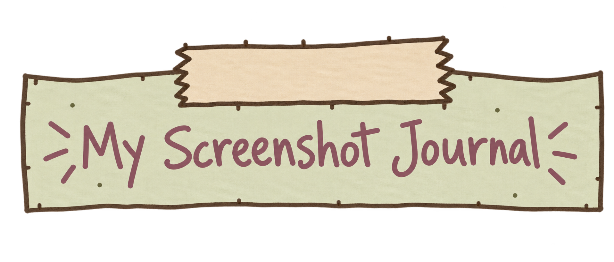
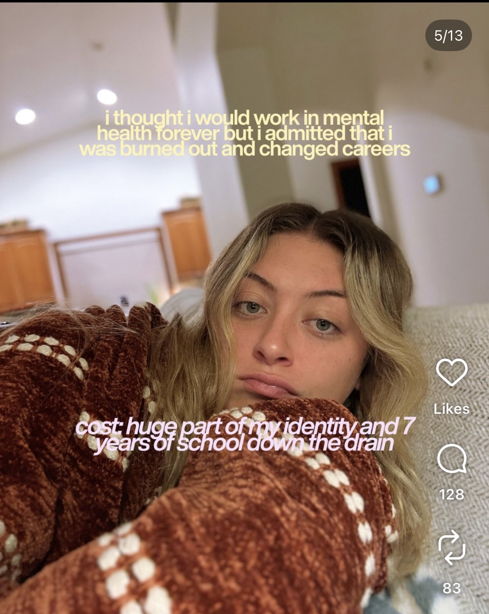
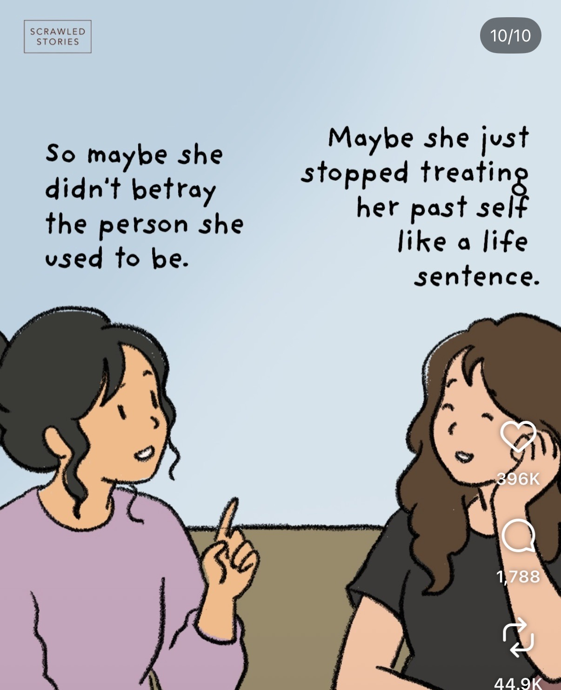
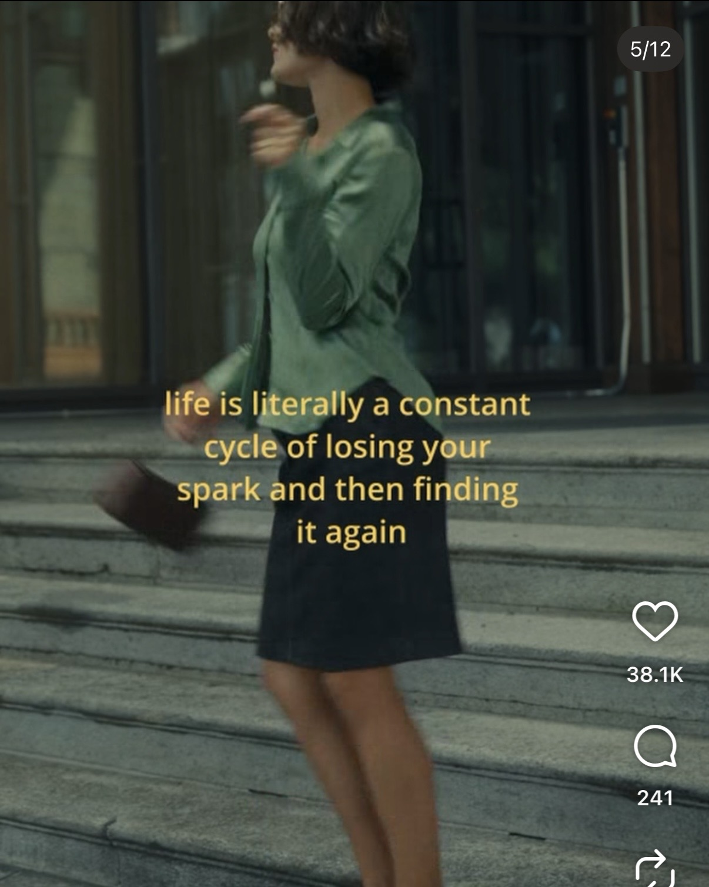
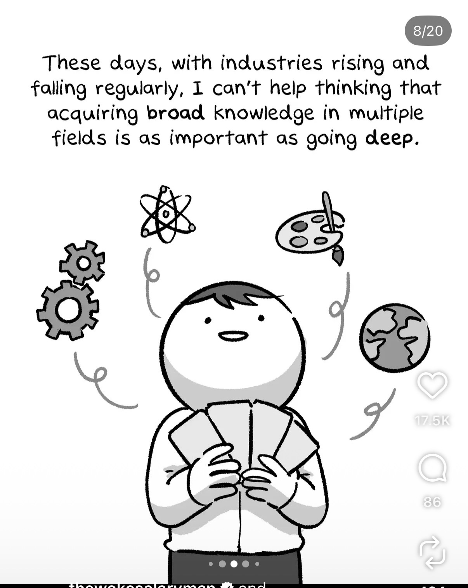

At some point in time, we learned that being a young adult meant having a plan all figured out and if that plan changed, it meant we were failures.

Posts about choosing a career, changing paths, feeling uncertain, and figuring out what work and purpose can look like in your twenties.

At some point in time, we learned that being a young adult meant having a plan all figured out and if that plan changed, it meant we were failures.

I think this screenshot points at the fact that some of us feel like our young adult identity is very closely tied to our careers and also highlights the conception that what we do as young adults is what we need to do for the rest of our lives. But this screenshot allows us to think that maybe that is not true for a lot of people.

Sometimes as people grow, directions change. Your plans that you once had don't need to be a "life sentence." Those can change too. This doesn't mean you aren't adulting.

When I saw this screenshot, I assumed that the "spark" was knowing your purpose and what you wanted to do with the rest of your life. I think it goes back to having everything figured out and that young adulthood meant there was no uncertainty. But I think that this screenshot shows us the rality of young adulthood. Sometimes we know and sometimes we don't and that's okay too.

As a kid, I thought that when you grew up, you'd have a long and stable career. I thought it was as easy as going to college, getting a degree, get a job in your field. But "with industries rising and falling regularly" no wonder it's not that easy anymore. No wonder so many plans involving our career fall through.
This is the feeling when nothing in your life goes to plan or when you feel the pressure of having the rest of your life all figured out at 23.